梅雨の合間に [梅吉]
昨夜は服や靴、キャリー、避難用具を枕元に置いて寝たのですが・・・
それらが気になってしょうがない梅吉さんw
靴をガブガブキャリーをゴソゴソ。やかましいったらありゃしないw
一通りチェックを終るとようやくお休みになりましたけど![[ダッシュ（走り出すさま）]](https://blog.ss-blog.jp/_images_e/164.gif)
我が家地方は余震もなく静かな夜を過ごせました。
そうそう！おっとのことに一言も触れてませんでしたが
昨日はたまたま有給で家にいたのです＾＾
出社してても仕事にならなかったかな、と。
タイミングの良いことでした。
･゜ﾟ･*:.｡..｡.:*･゜ﾟ･*:.｡. .｡.:*･゜ﾟ･*･゜ﾟ･*:.｡..｡.:*･゜ﾟ･*:.｡..｡.:*･゜ﾟ･* ･゜ﾟ･*:.｡..｡.:*･゜ﾟ･
梅雨入りはしましたが晴れている日も多い我が家地方。
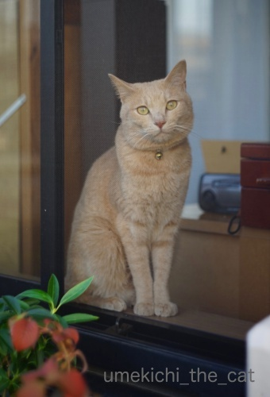
![[猫]](https://blog.ss-blog.jp/_images_e/101.gif) わし おそとにいく
わし おそとにいく
梅吉さんはベランダに出たくてしょうがありません＾＾
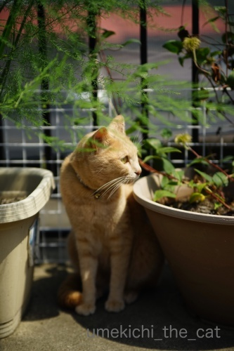
ぼーぼーに茂ったアスパラの鉢とクレマチスの鉢をチェック。
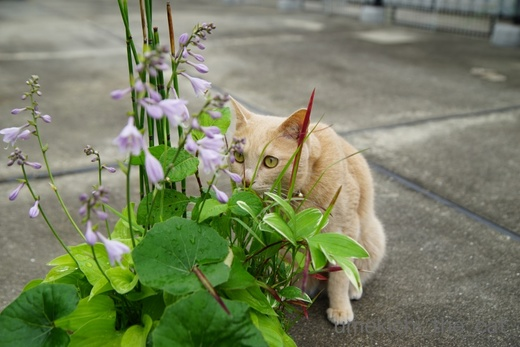
これまた色々茂った寄せ植えもチェック。
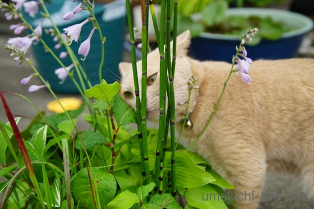
お鼻、くっつけ過ぎ。
トクサだから今度はお鼻が「擦れ擦れ」になっちゃいますよ。
とにかくベランダに出るといろんなものの匂いを嗅ぎまくり。
家の中とは違う自然の香り楽しいのかな？
ところで、トクサ、触ったことあるでしょうか。
硬い細かな筋が走っていて手をこすると擦り傷が出来そう。
一部の工芸品の仕上げやクラリネットのリードは紙やすりではなくトクサで調整するそうです。
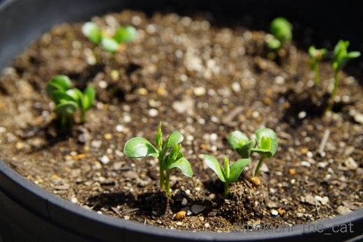
慌てて植えた枝豆の種、１週間でこんなに成長しています。
この時期ベランダの植物たちはあっと言う間にぼーぼーです(⌒_⌒;
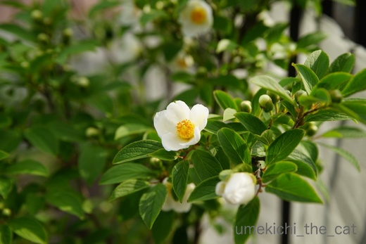
３年前に植えた夏椿、別名シャラノキ。
去年は花付きが良くなかったのですが今年はたくさん咲きました！やったー！！
花は咲くと１日で落ちてしまいます。
椿なのでぼとぼと落花して掃除が大変でもあるのですが
10日間くらいの間目を楽しませてくれました＾＾
 ↑ガブッと一押し↑
↑ガブッと一押し↑
週末、お肉！お肉！！
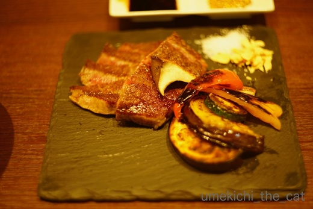
熟成肉！！！
普通に食べたらパサパサな部分ですがしっとり柔らかくなっています。
つけダレとしてわさび醤油、マスタードが出てきましたが
旨味があるので塩（これも付いてきました）あるいは何もつけなくても美味しかった。
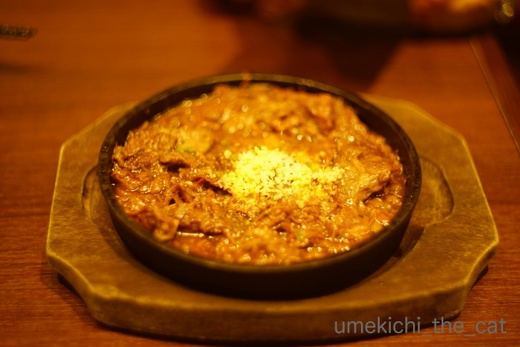
スジ肉の赤ワイン煮込み。
スジ肉なんて大阪に住むまで食べたことありませんでした。
食べたいと思ったことすらない・・・
ましてやおでんに入れるなんて、ありえないと思っていたのに。
美味しいのですよ。特に自分で煮るのが最高です。
どて焼き。時間はかかるけど面倒ではありません。
これは赤ワインの味するかなー？？？って感じでしたが
これをベースにトマトを足してガーリックもがっつり入れて、と構想が膨らみました＾＾
家でやってみよう。
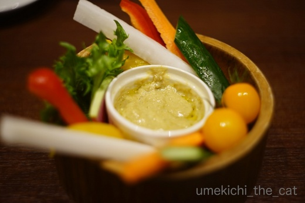
ちゃんと野菜も食べましたよー。
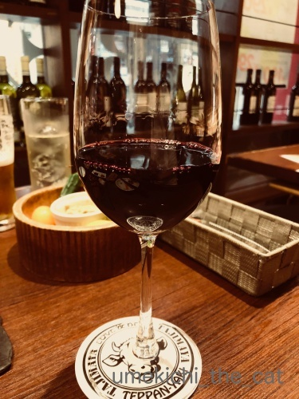
はい![[手（パー）]](https://blog.ss-blog.jp/_images_e/88.gif) もちろんワインです。これ一杯で終わろうなんて無理な話です・・・ (;^ω^)
もちろんワインです。これ一杯で終わろうなんて無理な話です・・・ (;^ω^)
でも３〜４杯で我慢しましたよ。
だって
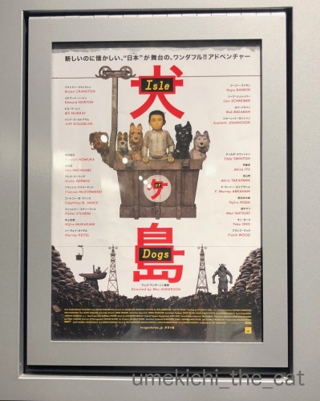
お食事の後映画に行ったのですw
大笑いの映画ではありませんが小ネタ満載のふふっと笑える映画です。
この監督、日本のことよく知ってるw（歴史・文化に精通しているという意味ではありません）
相当な日本のサブカルオタクとお見受けしましたよー。
酔っ払いでしたが寝ないで最後まで楽しく鑑賞いたしました。
オノ・ヨーコさんが実名と同じ名前のキャラの吹き替えをしているのですが・・・
日本の若者、30代くらいならオノ・ヨーコさん知らない人も多いんだろうなぁ・・・
もしかしたら「ビートルズ？なにそれ？？」だったりするのかしらね。
それらが気になってしょうがない梅吉さんw
靴をガブガブキャリーをゴソゴソ。やかましいったらありゃしないw
一通りチェックを終るとようやくお休みになりましたけど
我が家地方は余震もなく静かな夜を過ごせました。
そうそう！おっとのことに一言も触れてませんでしたが
昨日はたまたま有給で家にいたのです＾＾
出社してても仕事にならなかったかな、と。
タイミングの良いことでした。
･゜ﾟ･*:.｡..｡.:*･゜ﾟ･*:.｡. .｡.:*･゜ﾟ･*･゜ﾟ･*:.｡..｡.:*･゜ﾟ･*:.｡..｡.:*･゜ﾟ･* ･゜ﾟ･*:.｡..｡.:*･゜ﾟ･
梅雨入りはしましたが晴れている日も多い我が家地方。
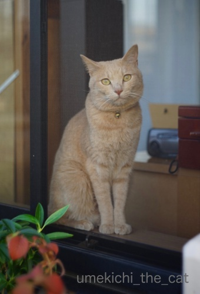
梅吉さんはベランダに出たくてしょうがありません＾＾
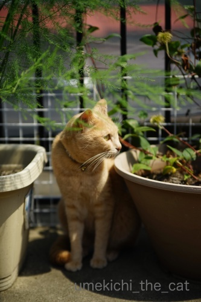
ぼーぼーに茂ったアスパラの鉢とクレマチスの鉢をチェック。
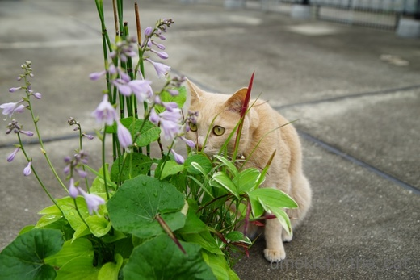
これまた色々茂った寄せ植えもチェック。
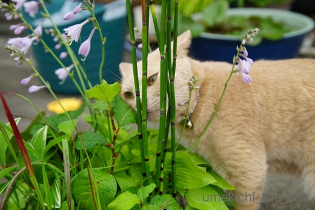
お鼻、くっつけ過ぎ。
トクサだから今度はお鼻が「擦れ擦れ」になっちゃいますよ。
とにかくベランダに出るといろんなものの匂いを嗅ぎまくり。
家の中とは違う自然の香り楽しいのかな？
ところで、トクサ、触ったことあるでしょうか。
硬い細かな筋が走っていて手をこすると擦り傷が出来そう。
一部の工芸品の仕上げやクラリネットのリードは紙やすりではなくトクサで調整するそうです。
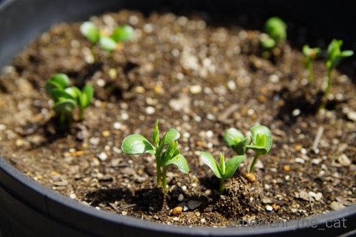
慌てて植えた枝豆の種、１週間でこんなに成長しています。
この時期ベランダの植物たちはあっと言う間にぼーぼーです(⌒_⌒;
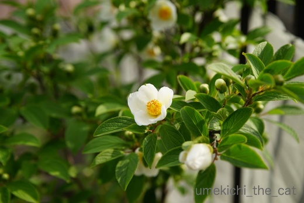
３年前に植えた夏椿、別名シャラノキ。
去年は花付きが良くなかったのですが今年はたくさん咲きました！やったー！！
花は咲くと１日で落ちてしまいます。
椿なのでぼとぼと落花して掃除が大変でもあるのですが
10日間くらいの間目を楽しませてくれました＾＾
週末、お肉！お肉！！
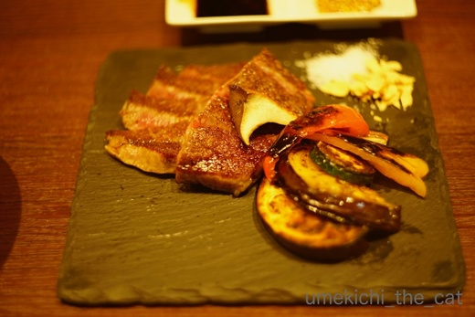
熟成肉！！！
普通に食べたらパサパサな部分ですがしっとり柔らかくなっています。
つけダレとしてわさび醤油、マスタードが出てきましたが
旨味があるので塩（これも付いてきました）あるいは何もつけなくても美味しかった。
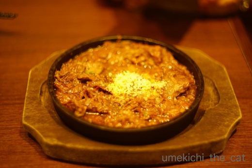
スジ肉の赤ワイン煮込み。
スジ肉なんて大阪に住むまで食べたことありませんでした。
食べたいと思ったことすらない・・・
ましてやおでんに入れるなんて、ありえないと思っていたのに。
美味しいのですよ。特に自分で煮るのが最高です。
どて焼き。時間はかかるけど面倒ではありません。
これは赤ワインの味するかなー？？？って感じでしたが
これをベースにトマトを足してガーリックもがっつり入れて、と構想が膨らみました＾＾
家でやってみよう。
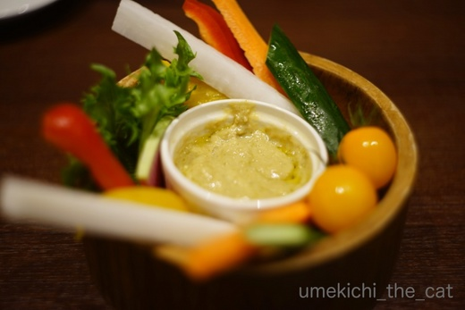
ちゃんと野菜も食べましたよー。
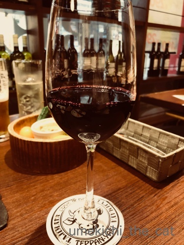
はい
でも３〜４杯で我慢しましたよ。
だって
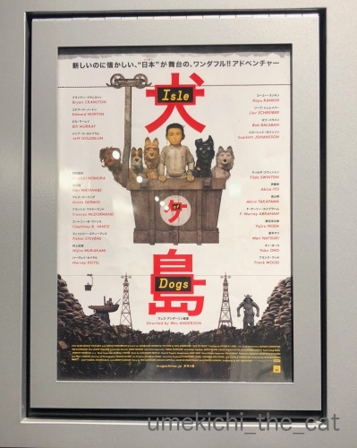
お食事の後映画に行ったのですw
大笑いの映画ではありませんが小ネタ満載のふふっと笑える映画です。
この監督、日本のことよく知ってるw（歴史・文化に精通しているという意味ではありません）
相当な日本のサブカルオタクとお見受けしましたよー。
酔っ払いでしたが寝ないで最後まで楽しく鑑賞いたしました。
オノ・ヨーコさんが実名と同じ名前のキャラの吹き替えをしているのですが・・・
日本の若者、30代くらいならオノ・ヨーコさん知らない人も多いんだろうなぁ・・・
もしかしたら「ビートルズ？なにそれ？？」だったりするのかしらね。

カフェオレ色の梅吉

梅吉 2023年8月10日 永眠


梅吉と出会った譲渡会

犬猫の理由なき殺処分ゼロ
妄想広告
UMEKICHI 光

爆発的に早い！
時々攻撃的！
Thanks to Mr.Boss365
爆発的に早い！
時々攻撃的！
Thanks to Mr.Boss365

昨夜余震が無かったのは良かったですが、
旦那様のことをお忘れになってた御様子、
旦那様があまりにも哀れで(´；ω；`)ｳｯ…
シャラノキ、儚くていいですね(〃'∇'〃)
by middrinn (2018-06-19 09:32)
一番に気にするのは、間違いなく猫のこと！
ダンナさんはその次でした。うちも(笑)
ベランダ散策たのしいね、梅吉君^^
はやく余震もおさまって、のびのびまたベランダ散策出来ますように！
スジ肉、確かに北海道ではあまり馴染みなかったよね。
じつはいまも、あんまり食べないですｗｗ
美味しいのは食べたいな(笑)
by リュカ (2018-06-19 10:40)
おはようございます。
ご主人有給で家いる・・・運ありますね！！
ベランダあると良いですね！！
梅吉君クンクンと季節の香り嗅いでます！！良い写真です！！（⌒ー⌒）
映画見る前の食事・・・小生確実に寝てしまいます！？(=^･ｪ･^=)
by Boss365 (2018-06-19 10:58)
おっと様ご在宅はほんとラッキーですね。こういう時家族と離れてるのが一番心配。忘れてたわけじゃないですよね!? どーでもいいわけでもないですよね?(くどい)
梅吉さんはすっかり落ち着いていてお外散策を楽しんでるご様子。いろんな種類の植物があって良いですね~。猫はたくさんの匂いを嗅ぐほどお利口になりますよ。梅吉さんもっと良い子になっちゃう。
「犬ヶ島」ビジュアルがかわよい。
by zombiekong (2018-06-19 12:22)
だんな様がご在宅で何よりでした。
昨日、相方は歩いて出社。当然のことながらオフィスビルのエレベータは止まっていて、28階まで階段だったとのこと。さすがにお昼は下まで降りるのが嫌で置いてあったお菓子で済ませたようです^^；
昨夜の余震は熟睡していて気付かず、今朝の余震はこてつだけが不安そうに窓や天井を見上げてウロウロしているのでどうしたのかな？と思ったら地震速報が流れました。
どうやらお猫様のほうが数段敏感。当面緊張はとけそうにありません。
真っ白なシャラ、キレイですね♪
広いお庭があって梅吉さんいいな～(^^♪
by ゆきち (2018-06-19 13:00)
夜も梅吉くんのゴソゴソがうるさかったくらいで余震もなし。
よかったです(*^-^*)
梅吉くんのお外探索、楽しそうですね。
ちぃさんの育てているお花には梅吉くんだって興味があるよね。
枝豆には私も興味津々。収穫したてのおいしい枝豆だったらいくらでも食べる自信があります！！ｗ
犬ヶ島はパペット映画なのね。気になる～(^-^)
by emi (2018-06-19 16:45)
梅吉さんの様子がおかしいですね。
いつもと違うことが分かっておいでですね〜
余震に注意してましたが、熟睡しました。
今朝の小さな揺れには驚きましたが、大きくならなくて安心でした。
ご主人様、お休みで良かったですね〜
やはり心強いですもの。
朝は休止だったエレベーターがお昼に復活してました。
ヤレヤレです。
by kiki (2018-06-19 17:04)
梅吉さん、いろんな物が出ているのが気になってしょうがなかったんですね＾＾
余震もなく、ご無事で何より。
相方さん在宅も良かったですねー！
離れているとハラハラしますもの＾＾それがないと‥
夏らしいベランダ、気持ちよさそうですね＾＾
by sana (2018-06-19 18:55)
おっと様、有給は凄い運だなぁ…
ホント、仕事にならないし、帰宅困難者になるわ大変ですよ~
by yamachan (2018-06-19 19:15)
梅吉さん、地震の事も忘れて安心していますね！
帰国しました(^^)
by ma2ma2 (2018-06-19 19:58)
ご無事で何よりです。
それにしてもご主人様がご在宅とはラッキーでしたね。
梅吉さん、梅雨の晴れ間の探索ですね。^^)
トクサ（「トクサ」とタイプしたら「木賊」と変換されてへぇーと感心しました。^^;）触ったことがありません。痛そう。
ビートルズを知らない若い人増えているのかなあ。
ということは、ドリフターズも知らないのかな。。。
by yes_hama (2018-06-19 21:58)
こんばんは＾＾
ご無事で本当によかったです。
ご主人も有給休暇で助かりましたね。
アスパラが順調に育っている様子。クレマチスと？？？
梅吉ちゃん、お外の空気がとっても気になるのよねーーー、でもそれ以上お外に行ってはいけませんよ＾＾；
熟成お肉！美味しかったでしょう＾＾
ワインもいっぱい進んじゃいますよね。
何より食欲あって元気で運が良いことが幸せです。
ただいま風邪中ｗちょっと元気ないコメントごめんなさい(^-^;
無花果、いっぱい実るように祈っててください。今年はたぶん一個ですが・・・無花果屋としてやっていけるよう。ｶﾞﾝﾊﾞﾘﾆｬｽ(笑)
by ake_i (2018-06-19 22:43)
ご無事でよかったです。
大変なのにコメント頂いて、ありがとうございます。
コメントがあるのは無事だったんだと思っていました。
植物と触れ合う梅吉さんが愛らしいです(^^)
by riverwalk (2018-06-19 23:52)
大きな余震がこないと良いですけどねぇ。
しばらくゆっくり眠れませんね＾＾；
by ぽちの輔 (2018-06-20 06:34)
夫さん、niceな有休でしたねぇ=(^.^)=
ベランダ散策に励む梅吉さん、
地震のせいで何か変わったことがないか
チェックしてくれてるのかも( ^ω^ )
by ニッキー (2018-06-20 08:12)
おはようございます。
夜分遅くコメント有難うございます。
ご主人持ってます！！ゴットハズバンドです！！
これからはロシア時間・時差も戦略プランの検討課題になりました！？(=^･ｪ･^=)
by Boss365 (2018-06-20 09:16)
うめ吉さん
隅々までチェック 可愛いね♪
トクサで自転車の車輪を磨くと
ピカピカになるからと
子供の時にやった事あります
そうそう
トクサの茎を途中で抜いて
また戻して
「どこが抜いた所でしょう？」
なーんて遊びもしたなぁ…
好きな植物です
by ヨッシー (2018-06-20 13:23)
梅吉くん敏感ですね。いつもと違うことするとソワソワしますよね(*^^*)
地震があったので災害時のネコ対策も考えとかないといけないなぁって今更ながら思いました。なんとなくしか考えてなかったわ！
by palpal (2018-06-20 14:44)
middrinnさん＞
忘れていたわけではないのですがー(^▽^;)
ブログ記事は梅吉が中心なので
後回しになってしまうのは確かですw
シャラノキ、いまは咲ききれなかった蕾が
黄色くなって来ました。
リュカさん＞
だよね！
人間は自分のことはなんとか出来るし
生きてればどっかで再会できるしw
地震が起きた瞬間はそれぞれが梅吉の名前呼んでいたようなww
まぁ、夫婦同じ方向を向いているので良し、です(*>艸<)
リュカさんが今度大阪に来ることがあったら
スジ肉煮ておくよー(^_－)☆
Boss365さん＞
おっとが有給を取ると大雨が降ったり
交通網が乱れたり・・・更には地震！！
なにか・・・ありますね。。。
おっとが休んだ時は皆さんにお知らせしましょうか( ´艸｀)
備えよー、ってwww
映画の上映開始は６時４０分からでした。上映時間１０１分。
Boss365さんなら食事、先にしますか後にしますか？
悩ましいでしょー！？
zombiekongさん＞
あははＯ(≧▽≦)Ｏ
念を押されてしまいましたねw
なにか不穏な空気が流れていたでしょうか(*>艸<)
仕事に行っていたらブログでの扱いも違ったでしょう。
実はブログ一度アップしてから「ちょっと触れとくかな」と
書き足したんですよーwww
よけい不審が募ったかしらwwwww
「犬が島」zombiekongさん、こういうの好きかなって観てました＾＾
ゆきちさん＞
２８階までΣ(ﾟ◇ﾟ；)
そんな時にも会社は営業していてしかも社員は階段を使って出社する・・・
日本人はなんて勤勉なのでしょう・・・（涙）
梅吉は落ち着いてすっかり日常を取り戻したかなと思ったのですが
聞き慣れない物音にはこちらがびっくりするくらい反応します。
人間が動く時には急に動かない、あまり物音を立てない
梅吉に触れる時にはちゃんと呼びかけてびっくりさせないように触れる
と、いつも以上に気をつけるようにしました。
お猫様、繊細です。。。
emiさん＞
夜はうろうろして寝ないかな・・・と思ったのですが
ひと暴れした後は私の足にどん！とよしかかって寝ちゃいました。
未だ聞き慣れない物音にすごくびっくりしたり
緊張はしているようなのですが
一緒にいると安心しているみたいです。良かったよー＾＾
枝豆、採りたてはびっくりするくらい甘くて美味しいの！
ただいくらでも食べられるほど一度に収穫できないのよね。
（あったらほんといくらでも食べられます。）
それがプランター栽培の弱点ですw
「犬が島」はパペット＋CGみたいです。
アートワークも凝っていて
ところどころパッチワークみたいな画像だなーって思いました＾＾
by ちぃ (2018-06-20 16:33)
猫って好奇心旺盛だよね。
一通りチェックしないと気が済まないのか（ﾟ□ﾟ）
by えーちゃん (2018-06-20 17:54)
kikiさん＞
地震以降聞き慣れない物音には敏感に反応しています。
必要以上にびっくりさせないように動く時は静かに急に動かない
急に触らないなど下僕も気を遣っております(｀_´)ゞ
相変わらず白目で熟睡しているので心配はしていませんがw
災害時はやっぱり家族が一緒だと心強いですね。
心配事も減ります＾＾
sanaさん＞
もともと好奇心の強い子ですが
寝室のいつもと違う様子には用心というより
ヤッホー！という感じで探索していましたw
緊張している中にも梅吉らしさ炸裂で笑っちゃいました ( ´艸｀)
災害時は家族がいると心強いですね。
その時はなんとも思わなかったのですが（笑）
今しみじみとそう思いますよー＾＾
yamachanさん＞
帰宅が困難だった方は本当にお気の毒で・・・
あの日雨が降っていなかったことだけは
不幸中の幸いだったでしょうか。
ma2ma2さん＞
おかえりなさい！
ma2ma2さんは空を飛んでいることが多いので
災害に遭遇する確率が低いかも！？
yes_hamaさん＞
おっとの在宅、お互いの心配をせずに済んで良かったです＾＾
木賊、ほう！それは興味深いですねー。
で、砥草は触りかたによってはとっても痛そうですよー。
お見かけの際にはちらっと触れてみてくださいませ。
「志村けんってドリフターズっていうグループに居たんだよ」
「それ、なにー？」という会話が聞こえてきそうですねwww
(ドリフターズは米国コーラスグループの方ではないですよね？）
ake_iさん＞
今になって（遅いですねw）おっとがいて良かったなって思います。
いなかったらもっと慌てていたかも、です＾＾
アスパラはもう順調すぎてボーボーです！
来年に向けて株を大きくしてねーって思ってますよー。
クレマチスとは鉢がお隣さんで梅吉お気に入りのスポットです。
風邪気味とのこと。
この時期は寒暖の差があったり体調管理が難しいですよね・・・
どうぞお大事になさってくださいませm(_ _)m
by ちぃ (2018-06-20 19:15)
地震の直後は、備えアレコレ＆ネコのアレコレを考えるのですが
時間が経つと危機感が薄れてしまって・・・
いざというときの行動に自信が持てなくなりました・・・。
ベランダのお花、きれいですね。ちゃんと手入れされていて、スゴイ。
お料理おいしそうです。
牛スジおいしいですよね。しかしあれは外で食べるモノと思ってます^^;
わたしは赤ワイン煮込み系だと、トリッパが多いかな〜
by Ja-Kou66 (2018-06-20 23:56)
ご無事でしたか
梅吉さんも元気でよかったわ
by じゅらまろ (2018-06-21 12:20)
riverwalkさん＞
ご心配いただいてありがとうございますm(_ _)m
我が家のあたりは申し訳なぐらいなんの被害も混乱もなくて・・
当たり前の日常が送れる有り難さを噛み締めております。
このところ怖い思いが続いたので
梅吉もお外に出てリラックスしてもらわなくちゃ＾＾
ぽちの輔さん＞
それが・・・結構眠れるものなのですよw
神経太いのかしら・・・
大きな余震は本当に勘弁してほしいです。
ニッキーさん＞
おっと、なにか持っている、らしいですw
出勤していても我が家から会社までは歩いて４〜５㎞なので
（道路に何かなければ）帰宅難民にはならずに済むのですけど(^_－)☆
ニャルソック、我が家支部の梅吉主任は
地震の翌日それはそれは熱心にお外を見ていました。
やっぱり何か感じるものがあったのでしょうか・・・
Boss365さん＞
そうかーアディショナルタイム、曲者ですね！！
時差が読めませんんでしたwww
ところでBoss365さんはラグビーW杯2019は行かれるのですか？
我が家は花園のチケットゲットしました！
実は私高校生の時にラグビー部のマネージャーを
1ヶ月だけした黒歴史があるのですwww
(つまらなくてすぐやめちゃった）
ヨッシーさん＞
もうなんでもすぐ匂いを嗅ごうとして・・・(-_-メ)
嫌いなはずの練り歯磨きも
毎回「ツーン」となって顔を背けていますw
わかっているのに好奇心がそれを上回る様ですよww
困った子ですwww
「どこが抜いた所でしょう？」遊びは
子供の頃スギナでやりました！
懐かしいです＾＾
palpalさん＞
いつもと違う事にはとっても敏感！
梅吉の場合は不審がるより
「これはなんやー！！！」と好奇心いっぱいですwww
こんな子だけど地震後は聞き慣れない物音には
こっちがびっくりするくらい反応します。
ナノくんときなこちゃんは大丈夫だと良いけど。
えーちゃんさん＞
見知らぬ物や外から来たもの（人）はすべてチェック。
宅配で届いたものなんて我先に見に来ますw
帰宅したおっとの靴下の匂いも欠かさずチェックしますwwwww
Ja-Kou66さん＞
いざという時、何も出来ませんでした。
おそらく自分一人ならテーブルの下に入るとか
玄関を開けに行く（脱出ルート確保）をしていたと思うのですが
まず「梅吉！」と思うと一気にいろんな考えが押し寄せて来て・・・
だから訓練って大切なんだなって。
が、家で訓練するのもね・・・
とりあえず脳内シミュレーションを繰り返しておこう
と思いました。
ベランダ植物はおっと担当です！私は虫がイヤなので見てるだけ＾＾
じゅらまろさん＞
はい！全く問題ありません！！
聞き慣れない物音にはいつも以上にびっくりしてますが
白目で寝てるので大丈夫v
by ちぃ (2018-06-21 13:58)